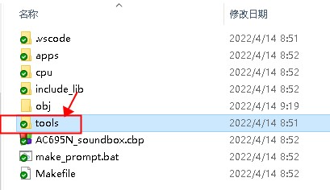
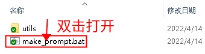
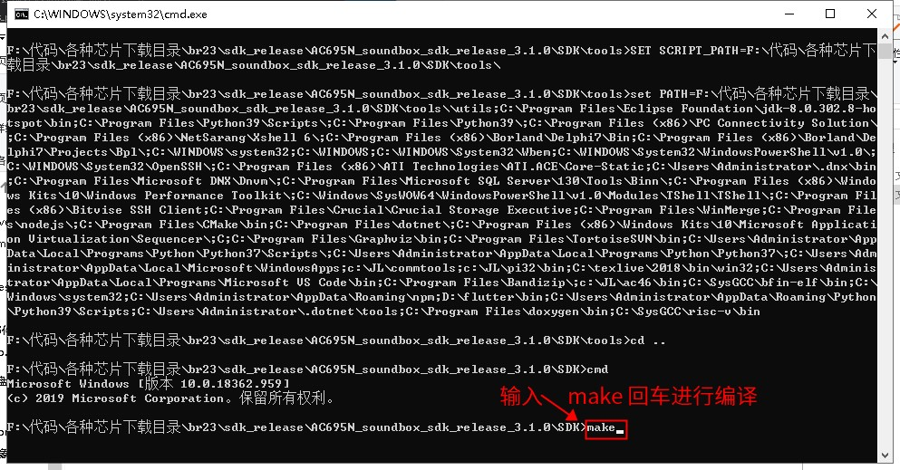

2.2. 使用 make 进行编译
较新的 SDK 默认都会支持使用 make 编译（支持 Windows 以及 Linux）。
SDK 的根目录下有一个 Makefile 文件。此外，为了支持 Windows 下使用 make。SDK 额外附带了 tools 目录，里面放置了必要的编译工具。
2.2.1. Windows 下使用 make 进行编译
在 Windows 下进行编译分为两步。下面以 AC695N 的 SDK 为例进行说明：
打开 SDK 目录下
tools目录内的make_prompt.bat脚本。如下图所示：


Note
如果 tools 目录下，未能找到 make_prompt.bat 文件，则打开 SDK 根目录下的 make_prompt.bat。如果还未能找到，则参考：如何将 Code::Blocks 工程转换为 make/VSCode 工程。
如果你不使用我们提供的 make_prompt.bat 来设置 %PATH% 环境变量，则你需要自行参考 make_prompt.bat 的内容来设置。
在弹出的命令行窗口中，输入
make并回车。

2.2.2. Linux 下使用 make 进行编译
在 Linux 下进行编译，分为以下四步：
首先点击下载Linux 下的工具链。
解压工具到
/opt/jieli目录下，保证/opt/jieli/common/bin/clang存在（注意目录层次）确认
ulimit -n的结果足够大（建议大于8096)。否则链接可能会因为打开文件较多而失败。 可以通过ulimit -n 8096来设置一个较大的值。进入 SDK 根目录，并输入
make进行编译
2.2.3. 排查使用 Makefile 编译出错的步骤
检查 SDK 所在的路径中，是否有空格、中文。
检查 SDK 所在的路径，是否层次过深。
检查 SDK 根目录中的 tools 文件夹，是否与 转换工具（点击此处下载） 中的 tools 文件夹一致。检查是否有缺失的文件。
检查对应的 Code::Blocks 工程是否能够编译，确认工具链环境是否有问题。
如果你不是使用我们提供的
make_prompt.bat来编译，确认是否正确设置了%PATH%环境变量，即，这个环境变量中能否找到对应的工具链。
2.2.4. 常见问题
Note
如果编译报错，参考：常见问题以及处理方法
如果下载程序报错，参考：为什么无法下载程序